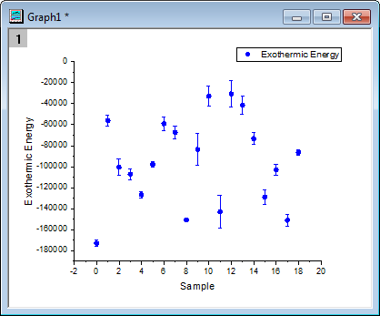
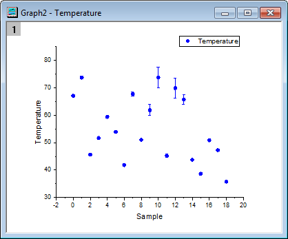
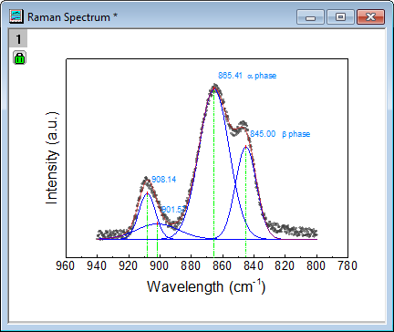
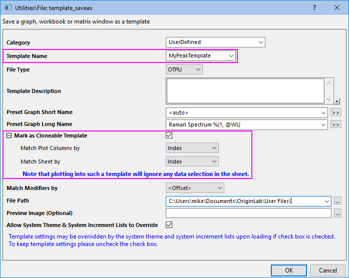
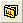
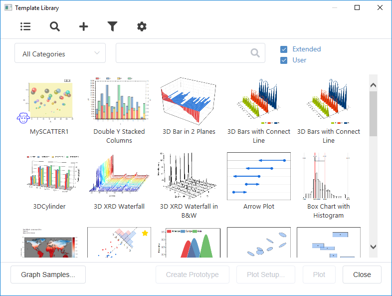
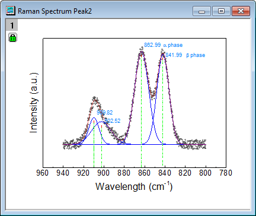

Auf Grundlage benutzerdefinierter Diagrammvorlagen zeichnen
Plot-User-Template
Zusammenfassung
In diesem Tutorial wird Ihnen gezeigt, wie ein Diagramm als benutzerdefinierte Vorlage gespeichert wird und neue Daten in die gespeicherte benutzerdefinierte Vorlage gezeichnet werden. Es gibt in Origin zwei verfügbare Arten von Diagrammvorlagen: Standardvorlage und klonbare Vorlage. Eine klonbare Vorlage kann einfach verwendet werden, um ein Diagramm aus einer neuen Arbeitsmappe/einem neuem Arbeitsblatt trotz der Komplexität der Datenzusammensetzung im Zieldiagramm zu klonen. Allerdings gibt es eine Bedingung, die darin besteht, dass neue Daten die gleiche Datenstruktur haben müssen wie die Daten im Zieldiagramm. Im Vergleich hat die Standardvorlage mehr Freiheit bezüglich der Datenquelle, kann dafür aber nicht Diagramme mit einer komplizierten Layerhierarchie oder Datenstruktur duplizieren.
Dieses Tutorial zeigt Ihnen, wie Sie:
- ein Diagramm als Standardvorlage erstellen und speichern,
- neue Daten in eine Standardvorlage zeichnen,
- ein Diagramm als klonbare Vorlage speichern,
- Daten mit der gleichen Datenstruktur in eine klonbare Vorlage zeichnen.
Standardvorlage
Standarddiagrammvorlage erstellen und speichern
Dieses Tutorial basiert auf dem Projekt: <Origin-Verzeichnis>\Samples\Tutorial Data.opj.
- Öffnen Sie das Projekt Tutorial Data.opj und navigieren Sie zu dem Ordner Custom Axis Scale to Show Different Scale Range.
- Markieren Sie Spalte B Exothermic Energy und C Energy-SD und klicken Sie auf die Schaltfläche
 auf der Symbolleiste 2D-Grafiken, um ein Punktdiagramm mit Y-Fehlerbalken zu erstellen.
auf der Symbolleiste 2D-Grafiken, um ein Punktdiagramm mit Y-Fehlerbalken zu erstellen.
- Als Nächstes soll das Symbol benutzerdefiniert angepasst werden, so dass es am Ende ein blauer, ausgefüllter Kreis ist. Dazu klicken Sie doppelt auf einen Datenpunkt im Diagramm, um den Dialog Details Zeichnung - Diagrammeigenschaften aufzurufen.
- Stellen Sie sicher, dass die erste Zeichnung unter Layer1 im linken Bedienfeld ausgewählt ist. Gehen Sie zur Registerkarte Symbole. Wählen Sie den ausgefüllten Kreis über der Schaltfläche des nach unten weisenden Dreiecks unter Vorschau aus und setzen Sie die Symbolfarbe auf der Registerkarte Einzeln der Farbauswahl auf Blau. Klicken Sie auf OK.
-
- 
- Um das Ganze als Standardvorlage zu speichern, klicken Sie mit der rechten Maustaste auf die Titelleiste des Fensters Graph1 und wählen Template speichern unter, um den Dialog zu öffnen.
- Geben Sie BlauerKreis als Vorlagenname ein und fügen Sie eine Beschreibung wie Blauer ausgefüllter Kreis im Bearbeitungsfeld Vorlagenbeschreibung hinzu.
- Wenn Sie möchten, dass der Langname der neu erstellten Diagramme nach dem Langnamen der ersten Zeichnung benannt ist, klicken Sie auf die Schaltfläche für weitere Optionen neben dem Bearbeitungsfeld Diagrammlangname vordefinieren und wählen Sie @LL: Langname. %(1,@LL) wird für Diagrammlangname vordefinieren angezeigt.
- Stellen Sie sicher, dass das Kontrollkästchen Als klonbare Vorlage markieren deaktiviert ist. Klicken Sie auf die Schaltfläche OK, um es als Standardvorlage zu speichern.
Neue Daten in Standardvorlage zeichnen
- Gehen Sie zurück zur Arbeitsmappe, markieren Sie die Spalten Temperature und Temperature-SD und wählen Sie im Menü Zeichnen: Meine Vorlagen: BlauerKreis (Benutzerdefiniert), um das Diagramm zu erstellen. Der Langname des Diagrammfensters lautet Temperature.
-
- 
Klonbare Vorlage
Diagramm als eine klonbare Vorlage speichern
- Drücken Sie die Taste F11 oder wählen Sie im Menü Hilfe: Lernzentrum, um den Dialog Lernzentrum zu öffnen. Wählen Sie im linken Bedienfeld Diagrammbeispiel und suchen Sie nach Raman.
- Klicken Sie doppelt auf das Diagramm, das ausgegeben wird, um den Unterordner Raman Spectrum zu öffnen.
- Das Diagramm Raman Spectrum wurde aus Daten in verschiedene Arbeitsblättern der Arbeitsmappe Peak1 gezeichnet, inklusive Datenbeschriftung. Es ist schwierig, mit einer Standardvorlage neue Daten wie diese mit einem Klick zu zeichnen. Speichern Sie aus diesem Grund das Diagramm als klonbare Vorlage und klonen Sie dieses Diagramm unter Verwendung der Daten in der Arbeitsmappe Peak2.
-
- 
- Klicken Sie dazu auf die Titelleiste des Diagrammfensters Raman Spectrum und wählen Sie Template speichern unter aus, um den Dialog Utilities\File: template_saveas zu öffnen.
- Geben Sie MeinePeakvorlage in Vorlagenname ein. Jetzt soll Raman Spectrum + Arbeitsmappenlangname als Diagrammlangname verwendet werden. Dazu klicken Sie auf die Schaltfläche für weitere Optionen neben dem Bearbeitungsfeld Diagrammvorlage vordefinieren und wählen Sie @WL: Mappenlangname, um den rechten Teil zuerst einzufügen. Geben Sie dann Raman Spectrum vor dem hinzugefügten %(1, @WL) ein.
- Stellen Sie sicher, dass das Kontrollkästchen Als klonbare Vorlage markieren aktiviert ist. Erweitern Sie den Zweig und stimmen Sie die Spalten und Arbeitsblätter aufeinander ab, indem Sie die Optionen Spalte stimmt überein mit und Blatt stimmt überein mit auf Index setzen.
- Klicken Sie auf OK, um den Dialog zu verlassen und die Vorlage zu speichern.
-
- 
Ein Diagramm mit Hilfe klonbarer Vorlagen klonen
- Aktivieren Sie die Arbeitsmappe mit dem Titel Peak2 und klicken Sie auf die Schaltfläche Mit Template, um den Dialog Vorlagenbibliothek aufzurufen.
- 
- Wählen Sie die klonbare Vorlage MeinePeakvorlage per Klick aus (gekennzeichnet mit Dolly-Symbol) und klicken Sie auf die Schaltfläche Zeichnen, um das Diagramm zu klonen.
- 
- Alternativ können Sie die Arbeitsmappe Peak2 aktivieren und das Menü Zeichnen: Meine Vorlagen: MeinePeakvorlage (Benutzerdefiniert) verwenden, um das Diagramm direkt zu klonen.